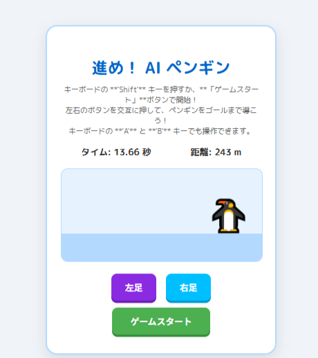
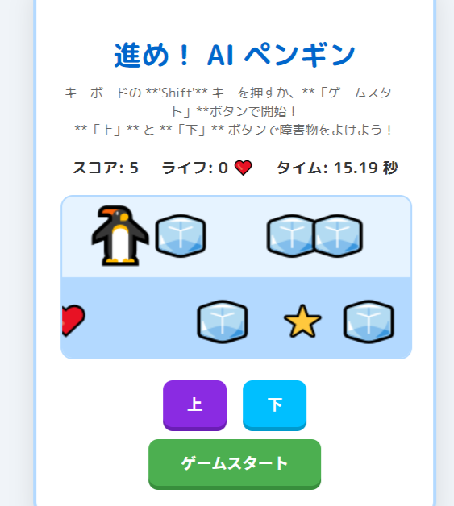
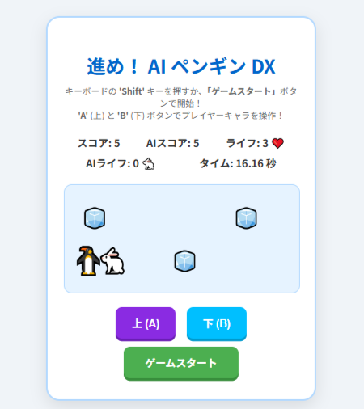

結果
実際にできたゲームを紹介します。
基本的なゲーム

このゲームはABを交互に押すことでペンギンが前に進むようになっています。
そして,その距離を競うゲームです。
AIが考える面白い要素が入ってるゲーム

基本的なゲームからAIが思う面白い要素を足したゲームが上のものです。
このゲームの内容はペンギンが自動で進みAとBで上下に移動できるゲームです。
制限時間は30秒で時間内にスコア(星)をどのぐらいとれるか
また氷に当たるとライフが減少し０になったらゲームオーバーです。
人間が考える面白い要素が入ってるゲーム
基本的なゲームから人間が思う面白い要素を足したゲームが上のものです。
ペンギンが自動で進み氷を飛び越えるゲームです。
氷に当たるとゲームオーバーになります。
制限時間がないので最後の方になったら難易度がものすごく上がり
強制的に終わるような設定になっています
右にある虹色の状態は無敵人れる状態で，剣に当たるとこの状態になることができます。
この状態になると氷に当たってもゲームオーバーになりません。
AIと人間が考える面白い要素が入ってるゲーム

AIが考える面白い要素が入ってるゲームから修正したゲームが上のものです。
うさき(AI)とペンギン（プレイヤー）の対戦形式になっています。
うさぎとペンギンが自づで前に進みABで上下に移動できます。
氷に３回当たるとゲームオーバーになります。
まとめ・考察
本研究の目的は、AIと人間のゲーム制作における発想の違いを比較・分析することでした。
実験の結果、AIが作成したゲームは「絶対に突破できないような高難易度の構成」
になっており、難しさそのものを楽しさと捉える傾向が見られました。
一方で、人間が作成したゲームは、
一つのボタンで操作できるシンプルな仕組みや視覚的な演出によって、
プレイヤーが直感的に楽しめる内容になっていました。
さらに、AIと人間の発想を組み合わせたゲームでは、難易度が程よく調整され、
対戦要素の導入によってより楽しみやすい構成になっていました。
このことから、AI単独ではまだ人間が感じる「楽しさ」の感覚とはやや異なる方向に
発想が向かう傾向があるものの、
AIと人間の協働によってバランスの取れたゲーム設計が可能になることが示唆されました。
以上より、AIは創造的な発想力を持ちながらも、
人間の感情的な価値観や楽しさの感覚を完全に理解するには至っていないと考えられました。
しかし、両者の特性を組み合わせることで、
より多様で魅力的なゲームの可能性が広がることが確認できました。